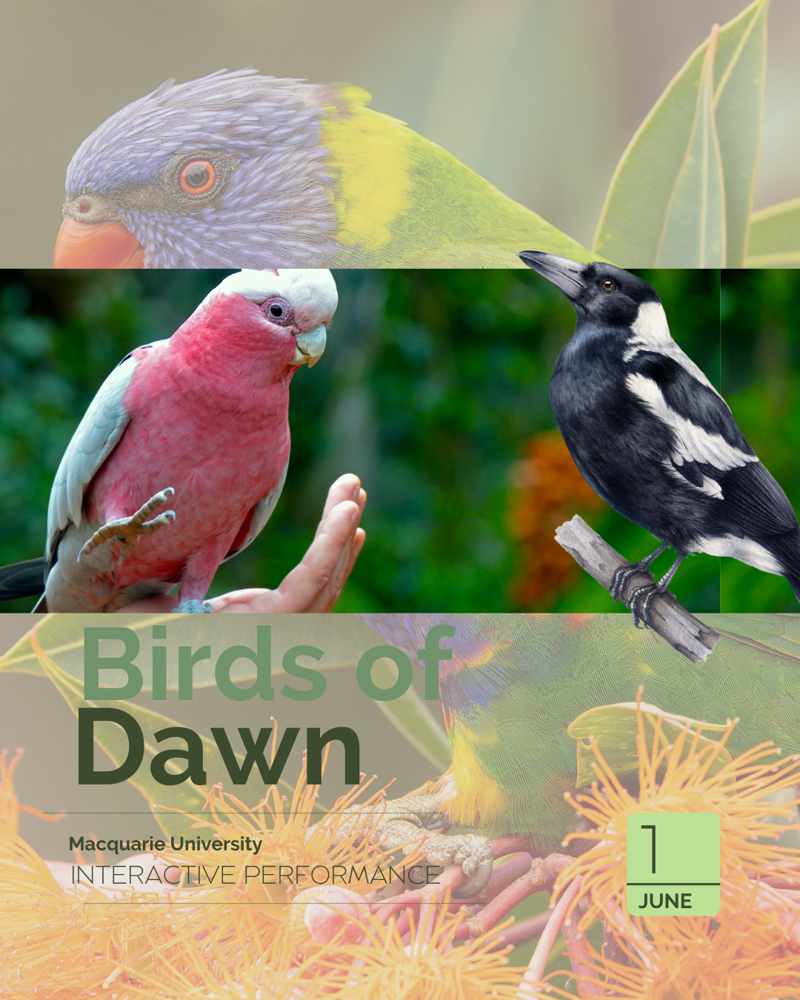

CREATIVE PRESENTATION: BIRDS OF DAWN
Birds of Dawn is a creative presentation that shows how Nature tries to draw the attention of a self-centered vlogger to the beautiful birds of Australia.
This project integrates natural elements, such as the birds' sounds, and technological elements, such as interactive media (TouchDesigner), video, and Al voice, to enhance the experience of the audience.
PROCESS JOURNAL
In order to document what we did regarding our final project, here is the journal of our activities.
6th-19th of April: mid-semester break. We started brainstorming about the technology we could use and developed this idea of interacting with a camera, a live performance. For this purpose, I decided to use Touch Designer. I wanted something that would react in real time to what we were doing, so I came up with the idea of trigger sounds by moving in front of a camera. I did my research on the internet and found a tutorial on how to create an interactive piano through Touch Designer (Akten, 2025). I followed this tutorial as a foundation, and then I tried to adapt it according to our project's requirements in the next stages.
20th of April: During the class, I presented to my classmates my idea of using TouchDesigner and the progress I have already made, and Regina came up with the idea of representing some of the most popular birds of Australia. In addition, we were informed during the class about the different possibilities that exist in order to manage the light in the room by David, the technician of the Faculty.
First, we wanted to record the birds' sounds in order to get original material, but we found it really difficult due to our schedule, and because we didn't know too many things about them, for example, where to find them, or at what time to look for them.
1st of May: I had completely finished the visual part of the TouchDesigner software. Basically, it is about a camera pointing at a wall, with a subject in front of it. On the computer's screen, you can see the same thing as the camera, except that there is a grid simulating piano tiles, which gets illuminated when the software detects a movement.
I just needed to figure out how to trigger each sound of the bird with the movement of the subject.
4th of May: Aaadrika proposed to us to have a narrator voice that conducts the whole performance, and turned it into a funny performance.
I really liked this idea because we started giving the technology a direction.
7th of May: Regina made the script during this day, based on what we discussed in the last class.
11th of May. At this point, I had accomplished my task of triggering the sound of birds with the movement of the subject, but as I presented the sound in class, Harshita suggest me to change some sounds of the birds, as they sounded a little bit odd.
I understood that point because I realized the limitations of the software in terms of the sound, originally I had in mind to adapt the bird sound to a specific note, this according to the piano tile where you would be located, and as you move you could play a different note with the same bird, but because of my limited time and knowledge, I decided trigger only the original sound of the bird no matter on what part of the frame you were located.
Given this decision, we also needed to discuss which birds' sounds sound better than the others.
12th of May: Harshita sent the new bird audio, replacing the kookaburra with eastern rosella. We ended up choosing these three birds: Eastern Rosella, Magpie, Galah, and Fairywren.
15th of May: Harshita sent the final version of the script, editing some parts of the original to match the descriptions of the chosen birds.
16th of May: In addition, Harshita elaborated the narration with an Al voice based on the script. We all decided to give the Al voice a deep voice, something like a voice suitable for a documentary.
18th of May: Regina made the video of a forest and integrated the Al audio narration.
During this class, we realized that I wouldn't be able to participate as a bird in the performance, as David couldn't control my computer, as he was busy making the light changes in the room.
21st of May: Harshita made corrections to the script because we realized it was too long, and I was no longer able to participate in the performance as a bird
22nd of May: we booked the dance studio and had a rehearsal by ourselves.
Regina and Aaadrika proposed the idea of including me as a vlogger, only interested in my followers. This was a new way of integrating me into the performance, and we found it very useful, because this way I could participate but without having to stay all the time in the scenario, allowing me to control the software in the moments that we needed. Today, we set the exact times of our entrance, our lines, and our movements.
25th of May: we got the final rehearsal with David, we could practice the choreography with all the lights and the narration of the Al voice. But one thing happened, this time, I was not able to project with my laptop on the big screens. On other days, it has worked all the time, but this day was different. As this was our last rehearsal, I didn't have enough time to diagnose this issue, and I only decided to arrive half an hour earlier on the day of the final presentation to fix any projection issues I could have at that moment.
29th of May: we had our final rehearsal by ourselves by booking the dance studio again. This time, we were more confident and felt everything was great. Nothing more we needed to adjust or do. We just had to wait until the first of June, the final presentation day.
1st of June: This day was the final presentation. I had a big issue trying to connect my laptop, where the TouchDesigner software was, to the big screen in the room.
The same thing happened as last time, and even though I arrived half an hour earlier now, I couldn't fix the problem.
Our last option was to move all the files to a different computer, which pretty much solved the problem, but the uncertainty remained until the last moment. Overall, we did a great performance, and we overcame any challenge The convenor, Janet, really liked it, as did our classmates.
This is the video of our final presentation:
POST-PROJECT ANALYSIS
This unit has opened a space for us to reflect on the complexities of the technologies involved in the creative industries field. First, we encounter many new ways in which the technology has been entered into the arts, such as holographic performances, Al actors, or robot performances, and then, we encounter countless perspectives about whether we should allow the use of technology in any kind of art completely. In the end, we understood that this was an ongoing debate, where conclusions have not been made yet, but that we could contribute to the discussion.
The debates made, the readings showed, and the content explained by the convenor helped us to forge our perspective on the technology in the creative industries. In my case, I think that the use of technology can be used or not be used in the art, that it shouldn't be banned, but if one doesn't want to use it, it is fine as well.
Just as the Australia Council of Arts (2021) has said regarding the use of digital and analog technologies:
Digital and analog technologies continue to exist alongside each other, and most people use a mixture of both in their everyday lives (...). In most cases, the digital and the analog end up being intertwined and overlapping in multiple ways (p. 51).
This also aligned with my way of thinking, because I consider that technology can give you a boost and enhance your art, but at the same time, you can't let it go as it is; it needs the creativity and direction from you. When we watched the past performances from this unit during class, it was clear to me that I wanted to go beyond a simple performance; I wanted to interact with the technology in an artistic way. At that point is where I imagined a live interactive projection, to provide a performance with something innovative.
In other words, I wanted to create a live performance where we could move on the stage, and at the same time, interact with a technology. After extensive research, I found the technology I wanted: to show a subject on camera, to make an effect of his movement and then trigger a sound with that movement.
As an inspiration of this, there was the Very Nervous System, from David Rokeby in 1986, he says:
In these systems, I use video cameras, image processors, computers, synthesizers, and a sound system to create a space in which the movements of one's body create sound and/or music. It has been primarily presented as an installation in galleries, but has also been installed in public outdoor spaces and has been used in a number of performances (n.d., para 1).
When I finally made my idea, I realised it was not enough, but not because there wasn't enough technology, but because a purpose and a meaning were missing. In this part, my teammates helped me and developed the history of this performance, the one with the vlogger, the narrator, and the Australian birds. The lesson for me is that once you have the technical aspects ready, you also need to provide them with significance. Once again, human and technology are intertwined.
One last aspect I would like to add to this reflection. I had some trouble trying to connect my computer to the projector prior to our presentation, and in the end, we had to transfer all the files from my computer to another one that could connect. We could project and perform our project, but I consider that I could have avoided this problem if I had generated a plan B.
My idea was to arrive half an hour earlier for our presentation to fix any problem I could have; nevertheless, that was not enough. One better idea could have been to have a backup computer beforehand that could project in case mine fails. I never thought about it, but in the end, this helped me to learn how, in the arts, many times there's only one presentation to perform, and it needs to be prepared and anticipated as much as possible.
DEVELOPMENT PLAN
For this project, I would like it to continue, and I see its future in very different ways.
The main idea I have is to create a series of performances about Australia, it can be about nature (birds, endemic animals, endemic plants), about society (Aussie slang, Australian Cities' sounds), or about anything that could involve the everyday life of this country. We already have the interactive technology that provides the project with an immersive feature, and we need to add different meanings according to each performance.
In terms of funding, I would like to associate with national and state museums, inviting them to collaborate. We could represent a good opportunity to show Australia's life in an innovative and attractive way. For example, it is regular for some museums to have open calls to local artists, such as the Murray Art Museum Albury in NSW or the Shepparton Art Museum in Victoria.
One design we can use for promoting our work to the museums is the following:

Besides museums, government organisations like Creative Australia often offer different grants and opportunities to organisations and individuals, which can be another way to get our project known.
In terms of marketing or promotion of our project, just as it is now, I believe the next steps could be to create a social media account through diverse platforms and create short-form videos as well as images of our last presentation. In addition, we will be inviting people to collaborate with us in the elaboration of more ideas to combine with the digital technology. All of this is with the purpose of raising awareness and becoming popular among artists and people.
I believe the very first step of a project like this is to be surrounded by people with similar interests and connect with them.
Regarding short-form videos, here are examples of what we can do on a daily basis:
It is not necessary for the content on social media to be professional, but personal and meaningful in terms of your audience.
I believe that if we keep pushing our project into these channels, we will succeed and have some opportunities available.
We need to aim at posting twice or three times per week to maintain consistency.
REFERENCES
- Al acknowledgment: ChatGPT and Gemini were used in order to code this webpage
- Australia Council for the Arts. (2021). In Real Life: Mapping digital cultural engagement in the first decades of the 21st century. Australia Council for the Arts. https://creative.gov.au/sites/creative-australia/files/documents/2025-04/In-Real-Life-Digital-Engagement-Research-Report-1.pdf
- Memo Akten. (2025, August 29). Webcam Piano | Part 1: Touchdesigner, motion detection, frame differencing. YouTube.
- Rokeby, D. (n.d.). Interactive Installations: Very Nervous System (1986-1990). Rokeby. Retrieved June 7, 2026, from http://www.davidrokeby.com/vns.html